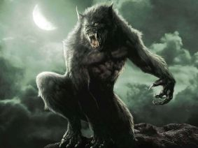

Vilkolakis - mitinė būtybė, žmogus, pasiverčiantis vilku. Žmogaus pasivertimas vilku buvo savanoriškas, naudojant magiškus daiktus (pvz., diržą), arba priverstinis, veikiant prakeikimui. Vilkolakis pasižymi antgamtine jėga, po kaklu balta dėmė (toje vietoje, kur buvusi užrišta skarelė, kai jie buvo žmonėmis). Viduramžių metraštininkai transformaciją siejo su mėnulio pilnatimi, tačiau ši koncepcija buvo retai siejama su vilkolakiu, kol jos nepanaudojo modernieji fantastikos rašytojai. Rašytojų aprašomas vilkolakis yra beveik nesužeidžiamas, jį gali užmušti tik sidabrinė kulka ar kiti sidabriniai ginklai. Užmušus vilkolakį paaiškėja, jog tai buvęs žmogus vilko kailiu. Dauguma rašytojų vilkolakio vaizdavimo kūriniuose elementų yra paimti iš autentiško folkloro, nėra jų pačių sugalvoti.
Ar jums niekada nekilo klausimas, iš kur, tokiu atveju, atsirado vilkolakiai? Holivudas nemini pirmojo vilkolakio atvejo. O juk yra be galo daug legendų apie pirmojo vilkolakio atsiradimą bei tai, kaip galima tapti vilkolakiu. Ir visuose mituose minima, kad visų pirma, reikia tikrai norėti sugebėti pasiversti vilku. Vienas iš pačių seniausių legendose randamų atvejų būtų tas, kad reikia visiškai apsinuoginti ir kurį laiką nešioti tik iš vilko odos padarytą diržą. Yra manoma, kad tai turi padėti pasijusti vilko odoje, išmokti mąstyti ir elgtis vilkiškai. Ir galų gale po truputį pradėti virsti į vilko pavidalą. Kitas randamas būdas būtų gerti lietaus vandenį iš vilko paliktų įspaustų pėdsakų. Ar tai jums neprimena vienos gerai žinomos pasakos? Žinoma, reikia būti tikrai ištroškusiam, kad šis būdas suveiktų. Na, o jeigu šie išbandyti būdai nesuveikė, lieka vienas iš pačių geriausių senųjų patarimų – sudaryti sutartį su velniu (tam reikia visų pirma tikėti velniais) – ir prašom jums, galite pasiversti vilku kiek širdis geidžia.
Ir labia gaila, bet sidabras niekada nebuvo pradinių legendų apie vilkolakių dalimi. Žinoma, mituose yra ginklų prieš vilkolakius. Dažniausiai randama tai, kad ginklai būdavo gaminami iš kalno pelenų bei vietinių raganių daromų nuodų vilkams, ir netgi tai nebuvo būtina. Bet koks ginklas galėtų užmušti vilkolakį, jeigu sužeidimas būtų pakankamai stiprus. Sidabrinės kulkos pasirodė mūsų akiratyje daugmaž aštuoniolikto amžiaus viduryje, prancūziškoje legendoje apie Gevaudano pabaisą, kurią pribaigė būtent sidabrinė kulka. Tuo metu po truputį šis mito paįvairinimas ir pasklido po visą pasaulį, galiausiai įsiterpdamas į viena žinomiausių filmų apie vilkolakius – The Wolf Man. Reikia pastebėti, kad šiame filme vilkolakis užmušamas netgi ne kulka, o sidabrinio strypo smūgiu į galvą.
Na, čia tai jau tikrai naktinių košmarų pasekmės, ir tikrai ne vilkolakių legendų pradininkų košmarų. Mūsų senoliai bijojo visiškai ne tokios groteskiškai baisios būtybės. Tų laikų vilkolakiai buvo paprasčiausiai žmonės, pasiverčiantys vilkais. Nuo tikrų vilkų juos skyrė labai nedaug požymių. Visoms legendoms būdingas vilkolakį nuo vilko skiriantis požymis – žmogiškos akys, kai kurie iš jų galėdavo kalbėti su žmonėmis, kai kuriems trūkdavo uodegos.
Neįmanoma atpažinti žmogaus, galinčio pasiversti vilkolakiu. Viena iš pačių baisiausių šiuolaikinio vilkolakio privilegijų ta, kad faktiškai neįmanoma pasakyti, ar šalia sėdintis žmogus staiga nepasivers vilkolakiu perkąsdamas tave pusiau. Vienintelis atvejis būti tikram, kad kaimynas – vilkolakis, yra sulaukti mėnulio pilnaties. Ir jeigu tu tikrai smalsus, gali baigti savo gyvenimėlį vilkolakio skrandyje. Iš šios nežinojimo baimės ir gimsta baisieji monstrai vilkolakiai. Žmogus, kuris tau atrodo mažiausiai įtartinas gali pasiversti į vos ne iš pragaro gelmių atsiradusią gauruotą pabaisą ir paprasčiausiai tave suryti, hi hi hi…
Kaip ten bebūtų, o senovėje atpažinti vilkolakį nebuvo taip jau sunku. Daugelis fizinių požymių išduodavo šias būtybes. Dažniausiai jie turėdavo ausis daug žemiau nei kiti žmonės, jų nagai būdavo lenkti, antakiai suaugę ties nosimi. Yra pasakojama ir daugiau vilkolakius išduodančių požymių, tokių kaip jų eisena. Ji būtų įpatingai vingri, lyg vilko uodega jam beeinant. Na o pats tikriausias būdas atpažinti vilkolakį, ir tai mes randame beveik visuose mituose – plaukuotas liežuvis.
Čia taip pat galima pasakyti, jog jokia senovinė legenda ar mitas nepalaiko šios teorijos. Žinoma, visada egzistavo vilkolakiai ir visada randame vampyrus, bet priešiškumas tarp šių dviejų rasių atsirado iš senų gerų Holivudo fantazijų. Galbūt ši teorija kilo dėl nuostabaus kontrasto tarp šių rasių atstovų, juk vilkolakiai įkūnyja gyvuliškus mūsų instinktus, o vampyrai lieka tokie nepaliečiami. O gal dėl to, kad mes, žmonės, liekame abiejų rasių maisto pagrindu, todėl tarp jų kiltų medžioklės teritorijų konfliktas… Kokia bebūtų priežastis, vis tik senoviniuose mituose nerandame jokių žymių apie galimą konfliktą tarp vampyrų ir vilkolakių.
Ko gero nereikia net sakyti, kad tai tikrai mūsų senolių išmintis. Senovės graikai tikėjo, kad didelis fizinis nuovargis gali išvyti vilką iš žmogaus kūno. Viduramžiais Europoje būdavo imamasi įvairių priemonių : specialios medicininės mikstūros, chirurgo pagalbos arba seno gero egzorcizmo pagalba padėdavo nutraukti vilkolakio sutartį su velniu. O Olandai turėjo patį paprasčiausią būdą – užtekdavo paprasčiausiai ignoruoti vilkolakį pakankamai ilgai, kad jis vėl taptų normaliu žmogumi.
Informacija paimta iš www.sites.google.com